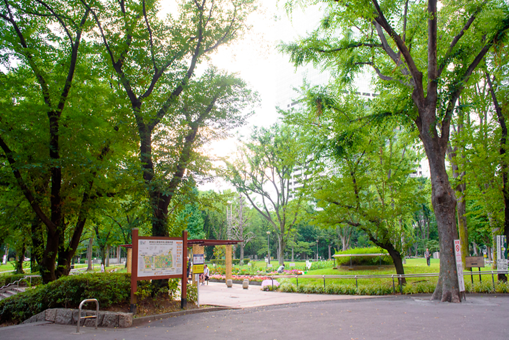
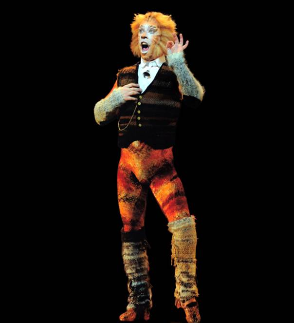
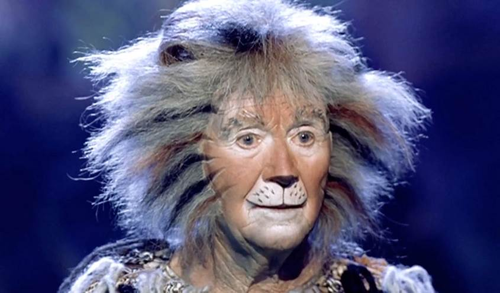
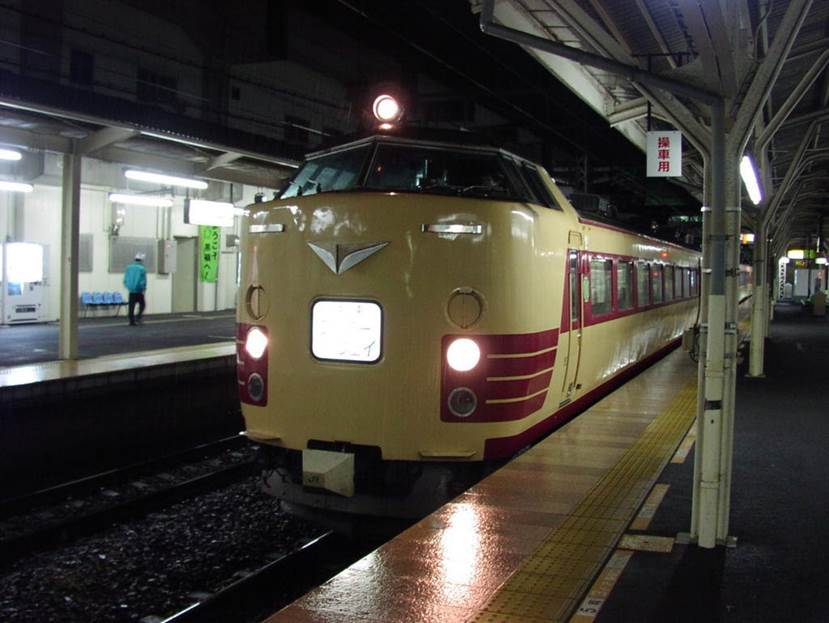
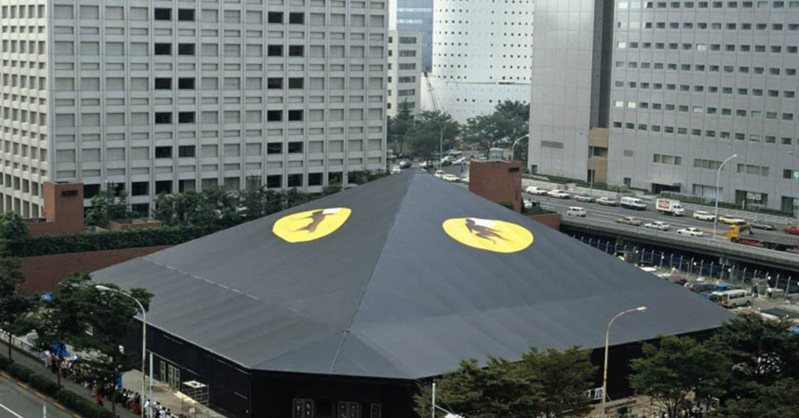
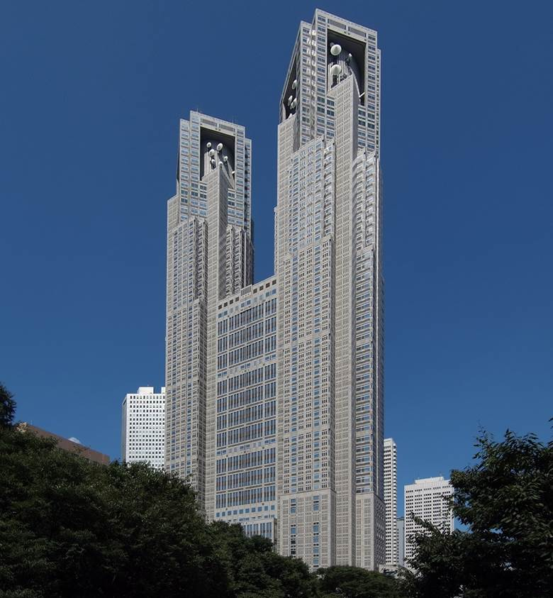
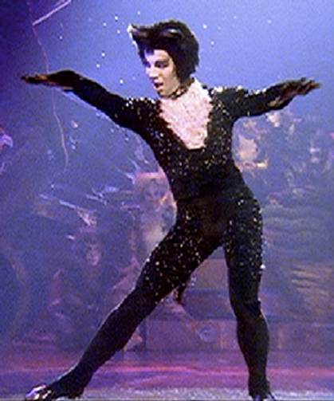
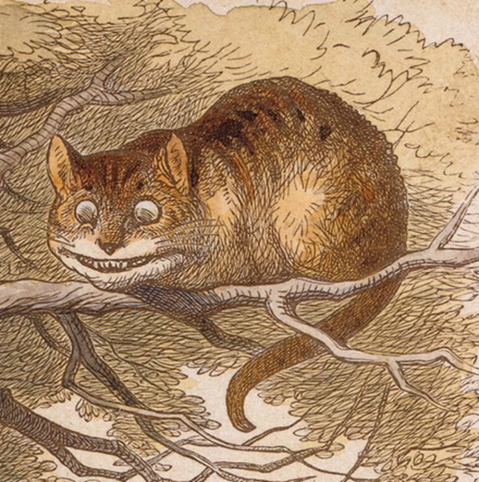

目录
1. 出典：
Ø 新宿中央公园
Ø 剧院猫（Gus）
Ø 月光列车
Ø 四季剧团
Ø 东京都厅舍
Ø 柴郡猫
Ø 青春18车票
2. 剧情：
1. 出典：
|
free market |
跳蚤市场 |
decrepit |
衰老的 |
|
hoarse |
嘶哑的，沙哑的 |
countenance |
面貌，面容 |
|
Well-worn sweater |
旧毛衣 |
Prick up his ears |
竖起耳朵 |
|
downtrodden |
受欺压的 |
eave |
屋檐 |
|
fawn |
谄媚，讨好 |
Old farts |
爷爷们 |
|
There was sleep crusted all around his eyes. |
眼旁净是沾着眼屎。 |
||
新宿中央公园，是东京都新宿区西新宿二丁目的新宿区立城市规划公园。面积8万8065平方米，在新宿区内的绿地面积仅次于新宿御苑、明治神宫外苑、户山公园，也是新宿区立公园中绿地面积最大的公园。
中央公园的位置就在Governor所在的东京都厅舍（Tokyo Government Office）旁边，位于摩天大楼的中心，是附近上班族休闲的地方，也是流浪汉的聚居区（游戏CG的帐篷是流浪汉的标志）。

Figure 1. 新宿中央公园一景
Figure 2. 新宿中央公园尼加拉人工瀑布
出自音乐剧《猫》。在原作中，这只猫是一只阳光、精力充沛的橘色虎斑猫，在运送邮件的火车（Night Mail overnight express train）上工作，所以也叫“铁道猫”。他是火车运营的重要角色，最大的性格特点是一丝不苟。他经常确认乘客和乘员，以确保一切顺利进行。火车没有他就不会行驶。

Figure 2. 铁道猫Skimbleshanks
出自音乐剧《猫》，全名是Asparagus。Gus是一只老而又脆弱，但又受人尊敬的猫。因为他的职业是演员，所以又被称为“剧院猫”。他最辉煌的演出是表演Firefrorefiddle, the Fiend of the Fell这个角色。
Gus经历过很多事，因此在讲起从前的经历时，他总是自信且健谈。

Figure 3. 剧院猫Gus
Oooh, the Night Mail! How I missed you so?
Didn’t they change its name at some point?
The Night Mail……how is it now？
这段话的英翻非常容易造成歧义，Skimble问Night Mail火车是不是改了名字，在原文中，Gus的回答并不是Night Mail，而是“ムーンライト”，指月光列车，JR夜行列车的昵称，特别是新宿駅～新潟駅之间的“月光越後號列車”只需510日元即可乘坐，在正值青春期的18岁青年间特别受欢迎。该线于2014年5月废止。
所以最后一句话的翻译应该是“怎么现在是……月光列车?”

Figure 4. 月光越後號列車 - 485系電車
日语“劇団四季”，日本著名商业剧团。后文提到的音乐剧《猫》由四季剧团最先引进日本，1983年11月11日首次公演便一炮走红。四季剧团的《猫》使用帐篷剧场上演，引进头一年使用的“猫剧场”坐落于新宿站南口，建设耗资约3亿日元。帐篷顶部绘有两个巨大的《猫》主题logo，一时成为新宿地标。

Figure 5. 新宿“猫剧场”
东京都厅舍，是日本东京都厅（东京都政府）及东京都议会的所在地，目前位于东京都新宿区的建筑为第三代厅舍，1990年12月落成，1991年正式启用，为新宿新都心最高的摩天大楼。其在时任东京都知事铃木俊一任内筹建，由建筑师丹下健三设计。
这里是游戏中东京都知事和她的秘书的办公地点。

Figure 6. 东京都厅舍
出自音乐剧《猫》，Mistoffelees是一只年轻的，安静而娇小的黑白无尾礼服猫。他是一位神奇的魔术猫，但却无法完全控制魔力。他是一位有特色的舞者，招牌动作是“魔术转弯” ("Conjuring Turn", consisting of 24 consecutive fouettés en tournant.)。

Figure 7. 魔术猫Mistoffelees
著名的柴郡猫，出自《爱丽丝漫游仙境》。他是一只咧着嘴笑的猫，拥有能凭空出现或消失的能力。甚至在它消失以后，它的笑容还挂在半空中（这点在The Game中有出现）。它总是带着平静、诱人的微笑来掩盖自己胆怯的个性。
柴郡猫在第五章有大量戏份，第七章的特定结局中会出场。

Figure 9. 柴郡猫插画
青春18车票（日语：青春18きっぷ/せいしゅんじゅうはちきっぷ seishun jyūhachi kippu ）是由JR集团所推出限乘车种及使用时间的周游券，适用于JR集团旗下六家旅客铁道公司路线。虽名为“青春18”，不过并不限制购票者的年龄，但也不设儿童优惠票价。
2. 剧情：
借两只老猫的谈话，讨论了新宿中央公园的过去与现在，环境，猫，和人，都发生了很大变化。二猫感慨之际，黛娜出现，询问柴郡猫未果后走开。